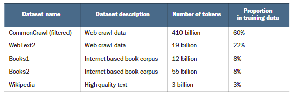
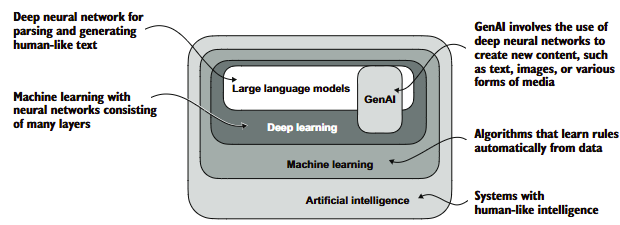
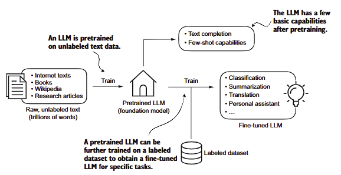
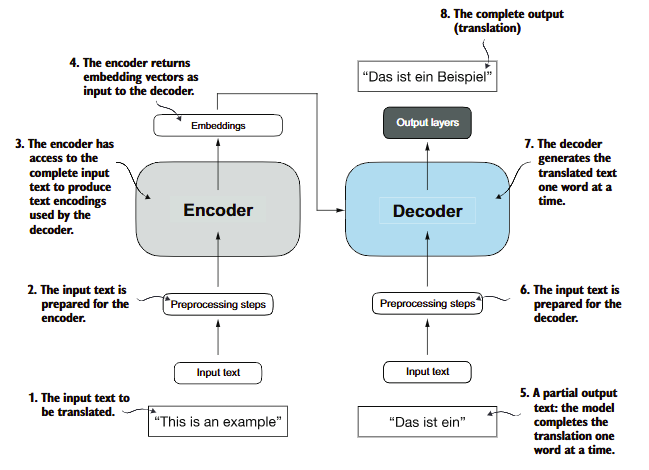
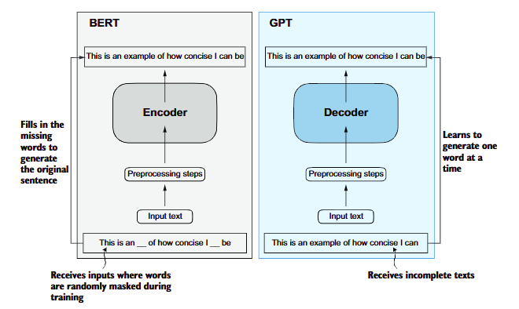

1. Giới thiệu về mô hình ngôn ngữ lớn
1.1. Giới thiệu
LLM là mạng thần kinh được thiết kế để hiểu, tạo và phản hồi văn bản giống con người. Những mô hình này là các mạng lưới thần kinh sâu được đào tạo dựa trên lượng dữ liệu văn bản khổng lồ, đôi khi bao gồm các phần lớn của toàn bộ văn bản có sẵn công khai trên internet
"Lớn" trong "mô hình ngôn ngữ lớn" đề cập đến cả kích thước của mô hình về mặt tham số và tập dữ liệu khổng lồ mà nó được đào tạo.

Các mô hình LLM thường có hàng chục, thậm chí hàng trăm tỷ tham số, là các trọng số có thể điều chỉnh trong mạng thần kinh được tối ưu hóa trong quá trình đào tạo để dự đoán từ tiếp theo trong chuỗi. Dự đoán từ tiếp theo rất hợp lý vì nó khai thác tính chất tuần tự vốn có của ngôn ngữ để đào tạo các mô hình về cách hiểu ngữ cảnh, cấu trúc và các mối quan hệ trong văn bản.

Khác so với các mô hình NLP truyền thống vốn được huấn luyện để thực hiện 1 tác vụ cụ thể, LLM được đào tạo với unlabel data. Để có thể thực hiện thêm các tác vụ khác, LLM cần được tuning thêm.
Có 2 loại tinh chỉnh (tuning) cơ bản của LLM là tinh chỉnh hướng dẫn (instruction fine-tuning) và tinh chỉnh phân loại (classification fine-tuning)

Các mô hình LLM hiện đại đều dựa vào kiến trúc của transformer - là một mạng thần kinh hiện đại được giới thiệu vào năm 2017 (bài báo: transformer is all you need). Kiến trúc này giới thiệu mô hình học máy phục vụ công tác dịch thuật.

Kiến trúc này gồm 2 module - bộ mã hóa (encoder) và giải mã (decoder). Module encoder sẽ mã hóa văn bản đầu vào thành vector chuỗi số hoặc vector nắm bắt thông tin ngữ cảnh đầu vào. Sau đó bộ giải mã sẽ chuyển các vector này thành ngôn ngữ đích. Hai module này liên kết với nhau bằng cơ chế tự chú ý (self attention).
Google sau đó đã phát triển kiến trúc BERT dựa trên nền tảng Transformers nhưng tập trung sâu vào khía cạnh dự đoán các từ bị ẩn. Điều này cho phép BERT phát triển tốt các mô hình đánh giá cảm xúc. Các mô hình GPT sẽ làm tốt hơn các tác vụ như tổng hợp văn bản, viết tiểu thuyết.m
